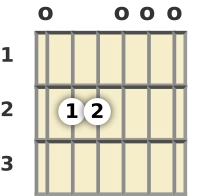

Dó maior (C)

Um dos acordes básicos para iniciantes.
Aprender os acordes é uma parte muito importante no começo da sua jornada de violão. Para não se frustrar, você deve começar com acordes mais básicos. Na página músicas, tem músicas que você pode tocar com os acordes aprendidos aqui. Pratique muito a troca de acorde!
Um dos acordes básicos para iniciantes.

Um acorde muito utilizado em diversas músicas.

Um acorde menor simples para começar.

Um dos acordes mais fáceis para iniciantes.
O diagrama apresenta números na lateral direita, isso representa as casas do violão. cada casa é separada por um traste, que é o ferrinho que tem no braço do violão. O violão tem uma afinação padrâo, ao você tocar as cordas soltas, o som que vai sair é o da afinação. os bolinhas com os números 1,2 e 3, representa os seus dedos. O número 1, representa o dedo indicador. O 2 dedo do meio. O 3 anelar. O 4 mínimo.